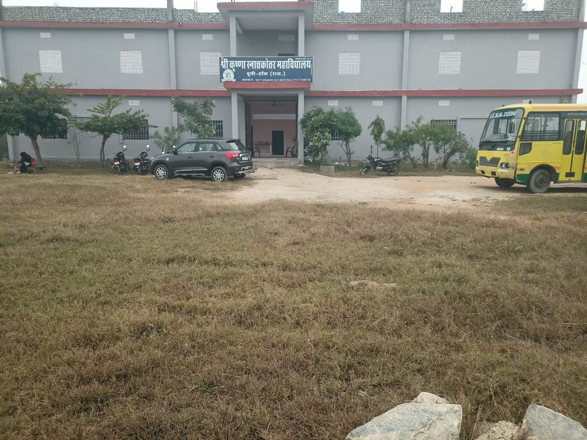

Knowledge • Values • Empowerment
Education for an Empowered
Future
Quality education, confidence, and better opportunities for women students.
Contact for Admission
Holistic development in a supportive learning environment.
Continuous support and inspiration from dedicated teachers.
A campus built on respect, discipline, and confidence.

Leadership
Welcome to Shri Krishna Mahila Mahavidyalaya. Our mission is to give every student quality education, strong values, and the confidence to build a successful future. We remain committed to supporting each student on her journey of learning and growth.
Recognising and nurturing the potential within every student is our priority.
Our Identity
We are committed to creating an academic environment where students learn leadership, ethics, and self-reliance alongside knowledge.
Learn MoreCompliance